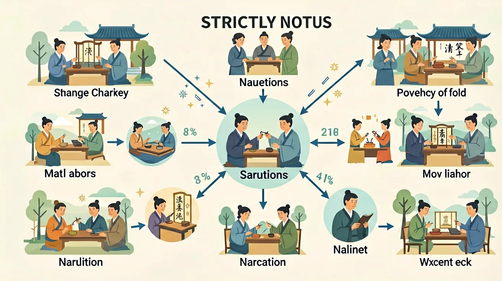

Concept
古文经典精读：课标核心是什么？
古文经典精读是高中语文的重要内容。在阅读过程中，探索阅读整本书的门径，形成和积累自己阅读整本书的经验。重视学习前人的阅读经验，根据不同的阅读目的，综合运用精读、略读与浏览的方法阅读整本书，读懂文本，把握文本丰富的内涵和精髓。
阅读整本书，应以学生利用课内外时间自主阅读、撰写笔记、交流讨论为主，不以教师的讲解代替或限制学生的阅读与思考。教师的主要任务是提出专题学习目标，组织学习活动，引导学生深入思考、讨论与交流。

古文经典精读是高中语文的重要内容。在阅读过程中，探索阅读整本书的门径，形成和积累自己阅读整本书的经验。重视学习前人的阅读经验，根据不同的阅读目的，综合运用精读、略读与浏览的方法阅读整本书，读懂文本，把握文本丰富的内涵和精髓。
阅读整本书，应以学生利用课内外时间自主阅读、撰写笔记、交流讨论为主，不以教师的讲解代替或限制学生的阅读与思考。教师的主要任务是提出专题学习目标，组织学习活动，引导学生深入思考、讨论与交流。
1.你能举出三个古今意义不同的词语吗？2.文言文判断句最常见的标志是什么？
1.分析'微斯人，吾谁与归'的句式特点 2.说明'金城千里'中使用的修辞手法
常见错因是以现代汉语思维理解古文，如将'可以一战'误译为'可以打一仗'（正确应为'可以凭借这个作战'）。误区还包括：忽视虚词作用、混淆词类活用（如'君君臣臣'中第一个'君'是动词）。诊断发现需加强语法分析训练，建议用不同颜色标注句子成分。
迁移挑战：选取一篇课外文言文（如《卖油翁》），分析其句式特点与修辞手法，并设计一个现代情境下的改编版本，说明改编时需要考虑哪些语言特征的转换。
先独立作答，再点选项查看对错与错因。
《岳阳楼记》中'先天下之忧而忧，后天下之乐而乐'体现的思想境界是
《醉翁亭记》'醉翁之意不在酒'的深层含义是
《桃花源记》中'黄发垂髫，并怡然自乐'描绘的是
《陋室铭》点明主旨的句子是：斯是陋室，____。
答案：惟吾德馨
通过居所简陋反衬品德高尚
《爱莲说》中形容莲花'中通外直，____'的品性
答案：不蔓不枝
象征君子正直不攀附的品格
关于唐宋八大家散文特点表述正确的是
分析两篇记体散文如何通过景物描写抒发政治情怀
❓ 这篇古文里作者到底想表达啥？为啥不直接说清楚？
❓ 这些文言虚词怎么区分？感觉长得都差不多啊！
❓ 背了这么多典故，考试时怎么快速想起来用？
学完这一课，这些问题你都能自信地回答。
🎯 能说出文中3个关键文言虚词的用法差异
🎯 能判断作者运用的2种主要修辞手法及其作用
🎯 能分析文中典故与主旨的逻辑关联
用思维导图拆解文章结构：起承转合+核心意象
结合注释理解字词本义，联系上下文推断语境义
对比同类主题不同朝代作品的表达差异（如唐vs宋）
用表格整理高频文言现象（通假/词类活用/特殊句式）
仿写文中经典句式（如'不亦...乎'），用于议论文写作
✅ 区分代词/助词/取消句子独立性等用法
💡 现代汉语思维定势
✅ 建立'典故-作者意图-文章脉络'三角验证
💡 应试套路化思维
口诀：字词句篇层层进，义理情志处处明
类比：读古文像拼乐高，先认准零件再组装
下列'而'字用法与其他三项不同的是？
《师说》'其可怪也欤'中'其'的作用是？
（真题）《岳阳楼记》'微斯人'与《论语》中哪句思想呼应？
（迁移）若用'岁寒松柏'典故赞美抗疫医生，最贴切的角度是？
（概念）对'互文见义'理解正确的是？
And：学生已掌握基本文言实词释义
But：但难以理解虚词在语境中的灵活作用
Therefore：本模块破解虚词与实词配合的密码
古文讲究'实词为骨，虚词为筋'。比如《醉翁亭记》'环滁皆山也'中，'环''滁''山'是实词（具体事物），而'皆''也'两个虚词让句子产生递进判断：'皆'强调范围之广（数字提示：滁州城外围共有7座山），'也'字收尾形成笃定语气。虚词虽无实义，却是文气贯通的关键。
🌍 就像发微信时实词是'明天10点图书馆'，而'咱们要不...？'的虚词让语气变商量。苏轼'何夜无月？'的'何'字，就类似我们问'哪儿没有奶茶店？'的夸张效果。
《岳阳楼记》'此则岳阳楼之大观也'中，虚词'则'的作用是？
